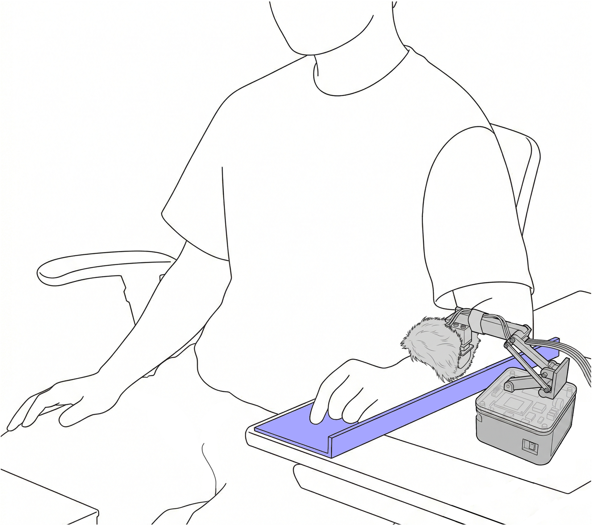

실험 내용
본 연구에서는 탁상이동로봇이 전완부(팔뚝)에 제시하는 '쓰다듬기 촉각'의 제어 성능을 평가하는 추가 실험을 진행합니다. 로봇이 팔을 부드럽게 쓰다듬는 촉각 자극을 제시하고, 물리 파라미터(힘·속도·직진성 등)의 측정과 촉각에 대한 주관적 평가를 수행합니다.

탁상이동로봇 촉각 제시 실험
ℹ️ 안심하고 참가하세요
본 실험에서는 통증 자극이 전혀 없습니다. 제시되는 촉각은 파트너에게 팔뚝을 부드럽게 쓰다듬어지는 것 같은 느낌(약 0.4N ≒ 약 40g)의 가벼운 자극입니다.
- 일상생활 수준의 가벼운 촉각 자극만 제공
- 건강 피해나 침습성의 우려가 거의 없습니다
- 실험 중 언제든지 자유롭게 중단·중지 가능
실험 개요
| 모집 인원 | 30명 내외 |
|---|---|
| 실험 일정 | 2026년 3월 |
| 실험 소요 시간 | 약 40분 |
| 사례금 | 학내 규정에 따라 지급 (시간당 1,080엔) Amazon Gift Card로 지급 |
| 실험 장소 | 筑波大学 第３エリア 3G222 |
참가 대상 및 제외 기준
실험 대상: 18세 이상의 건강한 성인 (츠쿠바대학 학생 및 인근 거주자)
❌ 제외 기준:
- 시각 및 청각에 있어 실험의 시각 자극 인식이나 구두 지시 이해에 지장이 있는 분
- 일본어로 충분한 대화가 어려운 분
- 중추성 뇌장애 또는 정신질환(의사 진단 하에 현재 치료·투약을 받고 있는 중등도 이상의 증례)이 있는 분
- 자극·센서 장착 부위(전완부)에 상처나 화상 흔적이 있는 분
- 최근 6개월 이내에 자극·센서 장착 부위에 화상을 입은 분
- 만성 신경통이 있는 분
- 심장 박동조율기를 사용 중인 분
🛡️ 안전에 대한 배려
본 실험에서는 통증 자극을 사용하지 않습니다. 제시되는 촉각은 일상생활 수준의 가벼운 자극(약 0.4N)이며, 건강 피해의 우려가 거의 없습니다.
| 참가자 권리 |
• 실험을 언제든 중단·중지할 수 있는 권리 • 자극 제시 부위를 장치로부터 자유롭게 떼어낼 수 있는 권리 • 중단한 경우에도 구속 시간에 따른 사례금을 받을 권리 |
|---|---|
| 안전 설계 |
• 쓰다듬기 모듈의 최대 압력은 약 1.9N(약 200g) — 이 이상의 힘은 가해지지 않음 • 로봇과 참가자 팔 사이에 바리케이드를 설치하여 직접 접촉 방지 • 참가자와 실험자 양쪽에 긴급 정지 스위치 설치 |
| 보험 적용 | 만에 하나 본 실험으로 인해 부상이나 상해를 입은 경우, 국립대학협회의 보험(国大協保険)이 적용되어 보상을 진행합니다. |
📝 참가 신청 방법
연구 정보
| 연구비/과제번호 | 科研費 25K24420 |
|---|---|
| 연구대표자 | 임유찬（筑波大学・システム情報系・特任助教） |
| 연락처 | yim [at] ftl.iit.tsukuba.ac.jp / 연구실: 3G222 |
개인정보 취급
수집된 데이터는 모두 익명화하여 관리되며, 개인이 특정되는 일은 없습니다. 데이터는 筑波大学「개인정보보호관리규칙」에 따라 엄격히 관리됩니다. 실험 참가 후 데이터 사용을 철회하는 것도 가능합니다. 본 연구는 헬싱키 선언에 따라 筑波大学 시스템정보계 연구윤리위원회의 승인을 받아 실시하고 있습니다.